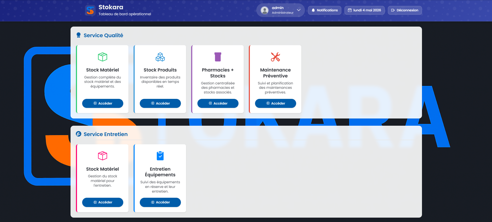
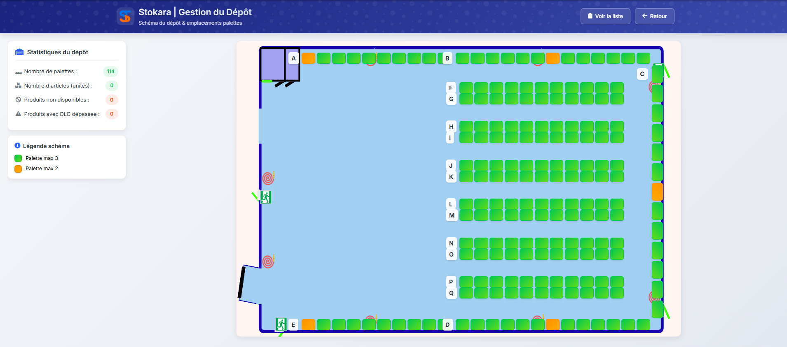

STOKARA
Le projet STOKARA est un logiciel de gestion des stocks développé pour une entreprise locale ayant besoin d'optimiser son inventaire et son suivi qualité.
Il a été lancé car le magasin utilisait des fiches papier peu pratiques, ce qui entraînait des pertes liées aux produits périmés et un manque de traçabilité pour les maintenances des équipements des labos.
J'ai donc créé cet outil sur-mesure pour automatiser la gestion des dates de péremption, des trousses de pharmacie et des maintenances préventives, tout en permettant un accès sécurisé depuis l'intérieur comme l'extérieur du magasin.
C'est dans le cadre de mon chef-d'œuvre que j'ai réalisé le projet STOKARA, un logiciel de gestion des stocks pour mon entreprise d'ou je suis apprenti.
Fiche projet


Technologies utilisées : Le logiciel est développé en Python pour la logique serveur, avec une interface utilisateur en HTML, CSS et JavaScript. Les données sont stockées au format JSON, ce qui permet une gestion simple et légère des informations.
Tableau des compétences mobilisées
| Tâche réalisée | Compétence CIEL | Matière liée | Preuve |
|---|---|---|---|
| Système de connexion sécurisé | C12 - Sécuriser | Cybersécurité | Code Python |
| Gestion des stocks + dates péremption | C04 - Analyser structure | Base de données | Modèle JSON + tests |
| Interface utilisateur HTML/JS | C08 - Coder | Programmation web | Pages HTML commentées |
| Serveur + accès externe (ports) | C10 - Installer et configurer | Réseaux | Configuration box |
| Maintenance préventive | C11 - Maintenir | Systèmes | Logs de maintenance |
| Schémas interactifs dépôt | C09 - Tester et valider | Captures d'écran |
Ma présentation en 5 minutes
Enjeux et dimensions du projet
Socio-économique
Optimisation de la gestion des stocks, réduction des pertes liées aux produits périmés, gain d'efficacité pour les employés.
Environnementale
Limitation du gaspillage des produits, maintenance préventive prolongeant la durée de vie des équipements.
Numérique
Sécurisation des données via mots de passe, accès distant maîtrisé, fiabilité du stockage JSON.
Culturelle
Transition du papier vers le numérique, appropriation de l'outil par les équipes, nouvelles habitudes de travail.
Améliorations et perspectives
Service Maintenance Préventive, schémas interactifs du dépôt, raccourcis et nouvelles fonctionnalités.
Refaire les schémas pour les rendre adaptables sur mobile, notifications automatiques pour les dates de péremption.
Poursuite d'études en BTS SIO. Le projet m'a confirmé mon intérêt pour le développement full-stack et l'administration systèmes.
Support candidat
Document d'appui des 5 pages pour l'oral du chef-d'œuvre
Auto-évaluation (grille jury)
| Présentation du diplôme & spécialité | 🔸🔸🔸🔸 |
| Démarche de réalisation & contribution | 🔸🔸🔸🔸 |
| Difficultés rencontrées & aspects positifs | 🔸🔸🔸 |
| Avis personnel sur la production | 🔸🔸🔸🔸 |
| Améliorations / perspectives | 🔸🔸🔸🔸 |
| Dimensions (socio-éco, env., numérique, culturelle) | 🔸🔸🔸 |
| Compétences acquises & insertion pro | 🔸🔸🔸🔸 |
| Autonomie par rapport au support | 🔸🔸🔸 |
| Mise en contexte filière métier | 🔸🔸🔸🔸 |
| Identification enjeux transition écologique/numérique | 🔸🔸🔸 |
Total estimé : 14/20 - Objectif : améliorer les schémas sur mobile et la robustesse des API.